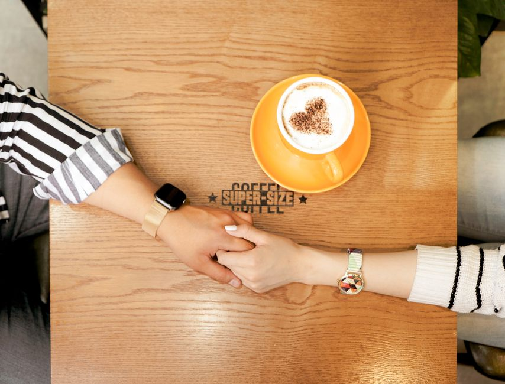
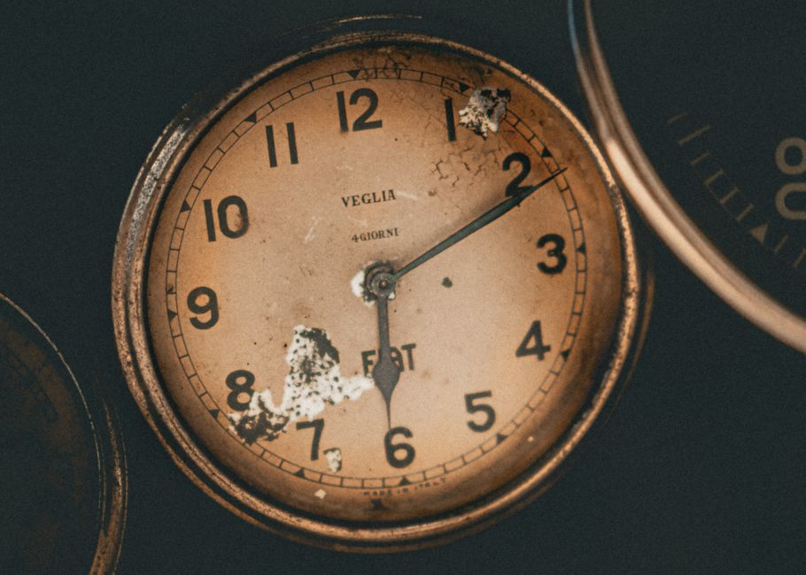
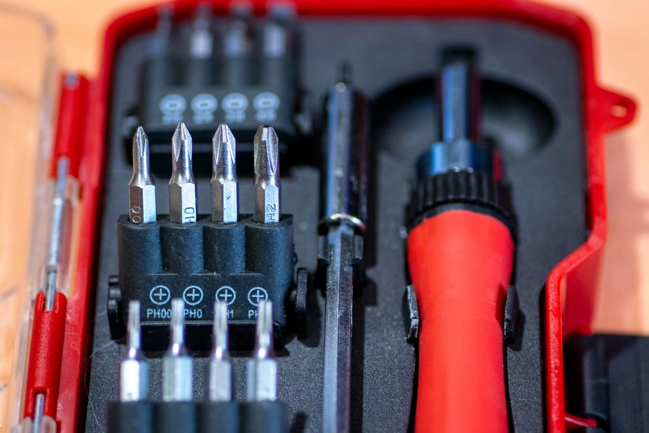
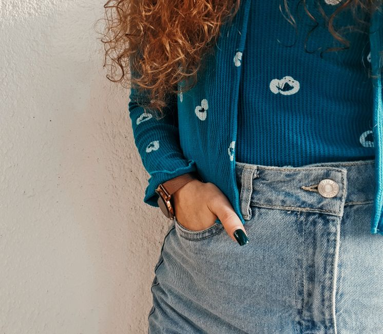

relojes
4 producto(s) publicado(s)

Correa de reloj de malla de acero inoxidable con cierre de imán ajustable universal
Correa universal de acero con cierre magnético ajustable. Malla metálica cómoda y duradera para cualquier reloj. ¡Cambia de estilo hoy!
0 vistas

Pila de botón sr626 de óxido de plata para relojes
Pilas de botón SR626 de óxido de plata para relojes. Baterías compactas de larga duración para relojes de pulsera, bolsillo y cronógrafos. ¡Compra ahora!
0 vistas

Kit de herramientas de reparación de relojes con destornilladores de precisión y abridor de cajas
Kit profesional de herramientas para reparación de relojes con destornilladores de precisión y abridor de cajas. Ideal para ajustes y mantenimiento.
0 vistas

Correa de reloj de cuero genuino ajustable para hombre y mujer
Correas de reloj en cuero genuino ajustables para hombre y mujer. Cambia el look de tu reloj con estilo y comodidad. Personaliza tu muñeca hoy mismo.
0 vistas